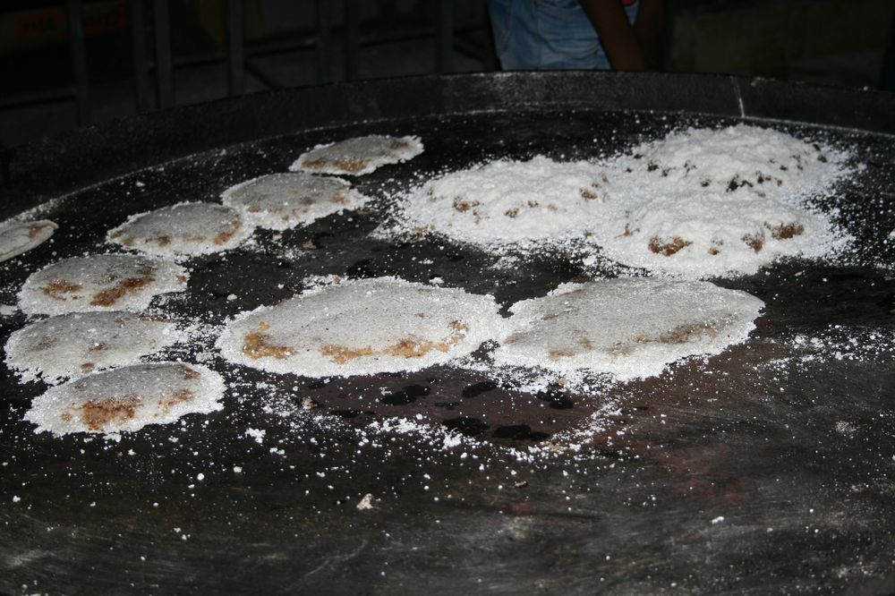
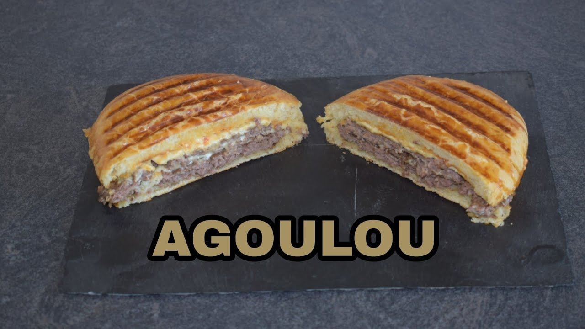
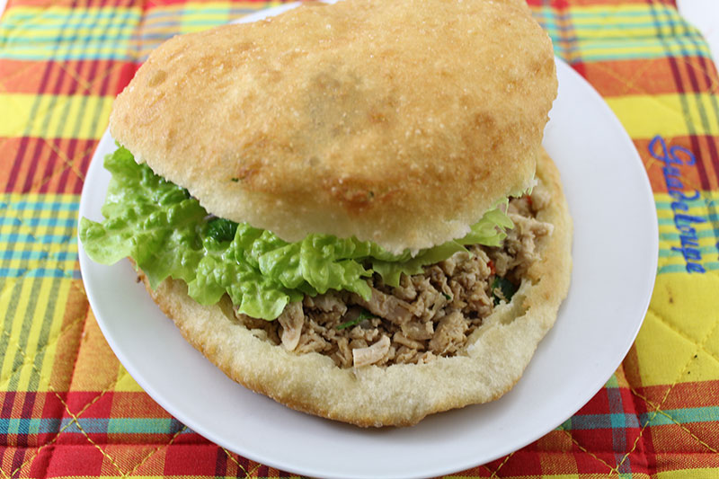

Découvrez des délice venus d'ailleurs
Le colombo de poulet
Incontournable dans la cuisine guadeloupéenne, le colombo de poulet est un plat composé de pomme de terre, d'aubergine, de carotte, évidement de poulet et le plus important la poudre à colombo. Ce plat est le plus souvent accompagné de riz et d'un morceau d'avocat. Mais il peut être aussi servi avec des racines, comme de l'igname.

La kassav
Faite à partir de farine de manioc la kassav est une spécialité typiquement guadeloupéenne. Quelle soit sucrée ou bien salé, la kassav reste une spécialité rare qu'on retrouve à la kassaverie de capesterre.
L'agoulou
L'agoulou est un hamburger typiquement guadeloupéen, le meilleur agoulou se trouve à Basse-Terre. Il est cuisiner dans un Food-truck présent sur le boulevard de Basse-terre.
Le bokit
Le bokit est un sandwich frit qui peut être ouvert ou bien fermer. Cette spécialité ce mange chaud évidement, on peut le deguster avec ce ue l'on veut dedans. Le plus souvent on le ange avec du jambon et du fromage dedans ou bien du poulet avec de la salade.
